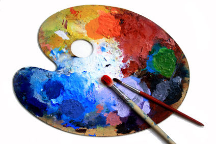

Hey, moi c'est Ambre !

Bienvenue sur ma page !
Ici je te partage un peu de qui je suis dans ma vie d'étudiante.
Petite présentation rapide

J'ai 18ans et vie aux alentours de Paris. Je suis sociable et j'adore passer du temps avec mes proches mais j'aime aussi passer du temps seule : j'en profite pour laisser parler ma créativité (même si ce n'est pas du grand art). Je suis très dynamique et déborde d'énèrgie, une pile sur pattes d'après mon entourage.
Niveau boulot
Je suis en 1ère année à l'école de Management Léonard De Vinci à la Défense tournée vers les soft skills et le digital. J'ai eu mon bac ES option mathématiques l'année dernière. Pour mon master je pense me trouner vers le marketing digital et le e-commerce.
Mes inspirations

Je m'inspire grâce aux livres, aux films, aux séries etc... qui me font voyager vers un autre monde et une autre vie que la mienne.
Mais aussi beaucoup grâce aux applications telles que Tumblr ou Pinterest. Je pourrais passer 4heures non-stop à regarder des tableaux, des décors, des dessins etc... Mais je préfère quand même passer mon temps à faire d'autres choses.
Je m'inspire aussi du quotidient, de mes proches, de ce que j'apprends et de ce qu'ils m'apprennent.
Mes passions
La lecture est une de mes passions. Je lis tout type de livres et tout type de style d'écriture. Mon auteur favoris pour le moment est Gilles Legardinier qui est le seul auteur (pour l'instant) à me faire exploser de rire seulement avec des lignes.
L'écriture fait aussi parti de mes passions même si j'ai un peu abandonné en ce moment par manque de temps. Je n'écris pas de roman ou de livre, j'écris quelques passages, descriptions et dialogues. Mais je suprrime et jette tout après j'ai beaucoup trop peur que quelqu'un tombe dessus.
La peinture et le dessin sont aussi des activtés que j'aime faire. Mélanger les couleurs avec la peinture, gratter la feuille avec les crayons, partir de rien et finir avec tout un tableaux (même s'il n'est pas spécialement beau) sont une source de détente et de satisfaction pour moi.